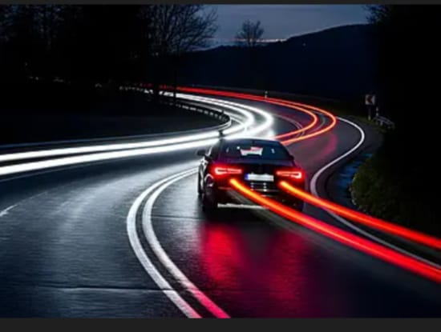
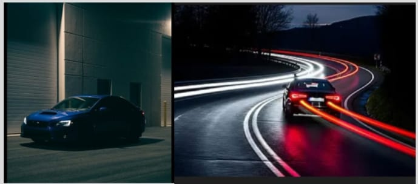

Prime Ride is a night time mobility scheme built specifically for essential workers that move between 11pmto 6am, when public transit is unreliable or unavailable. It prioritizes safety, reliability, affordability and employer partnership.
Schedule a RidePrime Ride is designed to make night-time transportation simple, safe, and reliable for essential workers, drivers, and employers. Our system connects verified drivers with workers who need dependable rides during late-night and early-morning hours. Whether you are commuting to a hospital, factory, hotel, or security shift, Prime Ride ensures you arrive safely and on time.
Sign up and verify your profile to begin scheduling rides.
Choose pickup location, destination, and time.
Monitor driver's location in real time.
Reach your destination safely and on time.
Access detailed record of all your trips.
Track your ride from pickup to drop-off.
All drivers pass identity and background checks.
Emergency assistance whenever needed.